In this homework, in section I we first implement Bezier curves and surfaces using the de Casteljau algorithm, then in section II we build mesh editing operations on the half-edge data structure. This includes area-weighted vertex normals, edge flip, edge split, and loop subdivision. For the extra credit, we implement edge split and loop subdivision for meshes with boundary. Together these operations allow us to edit and smooth geometric objects represented as meshes.
The hardest part of this homework was implementing the edge flip and edge split operations. It was initially difficult to keep track of all the geometric objects and their relationships, but once I drew the diagrams out I was able to implement these step by step. The most interesting part of this homework was implementing the loop subdivision operation. It was interesting to learn about the different ways to smooth meshes, and the pros and cons of each method.
De Casteljau's algorithm is a recursive algorithm used to evaluate points on a Bezier curve. Given \(n+1\) control points \(P_0^{(0)}, P_1^{(0)}, \ldots, P_n^{(0)}\), the algorithm evaluates the Bezier curve at parameter \(t \in [0,1]\) by recursively computing
\[ P_k^{(i+1)} = (1-t)\, P_k^{(i)} + t\, P_{k+1}^{(i)} \]After \(n\) iterations, the algorithm produces a single point \(P_0^{(n)}\), which is the point on the Bezier curve at parameter \(t\).
This is implemented in evaluateStep. Given the \(n+1\) control points points, we first allocate an array result of size \(n\), then define
BezierCurve::drawCurve then calls the function until only one point remains.
The following plot shows screenshots of each level of the evaluation, with the final curve plotted at the end.
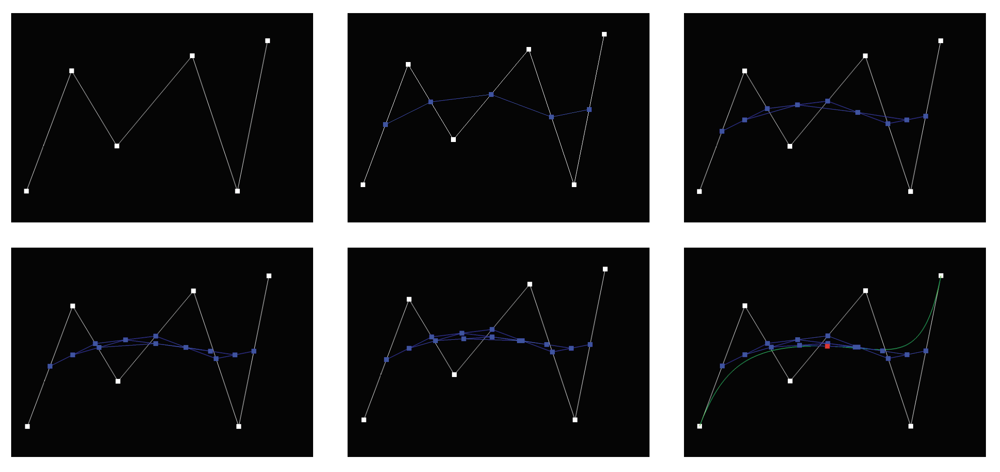
The following shows three different Bezier curves obtained by varying the control points.
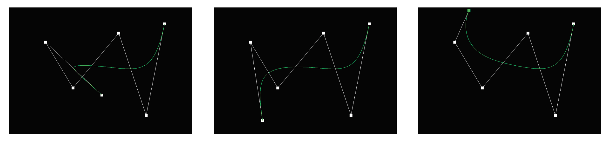
Below we also show the effect of varying the parameter \(t \in [0,1]\).
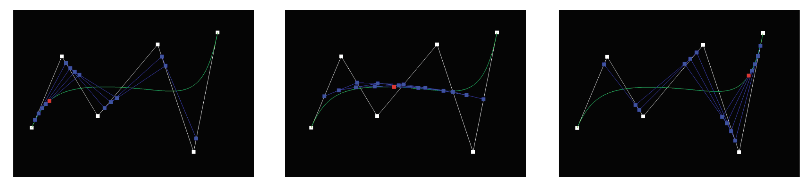
For Bezier surfaces, we are given \((n+1)^2\) control points \(P_{i,j}\), where \(i,j = 0, \ldots, n\). To evaluate a point at \((u,v) \in [0,1]^2\), we first perform the 1D de Casteljau algorithm in the \(u\)-direction, namely on each sequence of control points
\[ P_{0,j}, P_{1,j}, \ldots, P_{n,j}, \qquad j = 0, \ldots, n. \]This produces \(n+1\) intermediate points \(Q_0(v), \ldots, Q_n(v)\), where each \(Q_j\) is obtained by evaluating the corresponding Bezier curve at parameter \(u\). We then apply the 1D de Casteljau algorithm to these \(n+1\) intermediate points in the \(v\)-direction, producing the final point on the Bezier surface at \((u,v)\).
This is implemented using three functions:
BezierPatch::evaluateStep: Given a sequence of control points, return the control points at the next level. This is implemented in the same way as in Part 1.BezierPatch::evaluate1D: Given a sequence of control points and a parameter \(t\), return the corresponding point on the Bezier curve. This is implemented by repeatedly calling evaluateStep until only one point remains.BezierPatch::evaluate: Evaluate the Bezier patch at parameter \((u,v)\). We first call evaluate1D on each sequence of control points in the \(u\)-direction and store the resulting \(n+1\) intermediate points in an array. We then call evaluate1D on these intermediate points with parameter \(v\) to obtain the final point on the Bezier surface.The final rendered teapot is shown below.
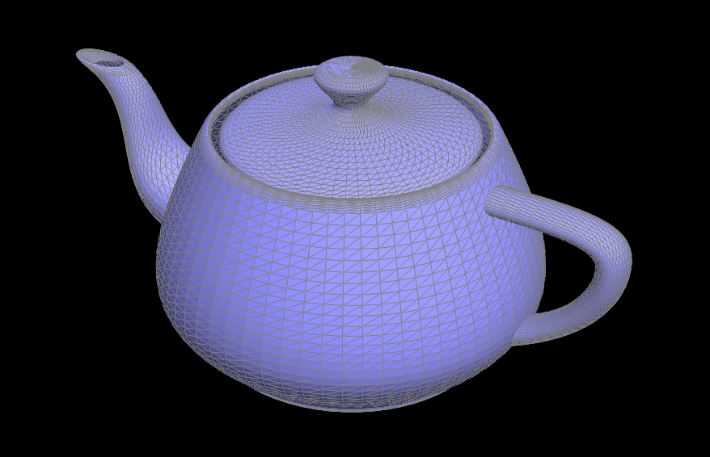
We first implement a helper function getArea, which takes in three vertices \(a\), \(b\), and \(c\) and computes the area of the triangle formed by these vertices. This can be computed with the cross product
To compute the area-weighted normal, we initialize a zero normal vector av_normal, then:
h is not a boundary face, compute the area w of the triangle.n be the unit normal of the face. Update the accumulated normal as av_normal += w * n.h = h->twin()->next(). This brings us to the next triangle.
We repeat these steps until we return to the starting halfedge. Finally, we normalize av_normal to obtain the area-weighted vertex normal.
The rendered teapot with and without area-weighted normals is shown below.
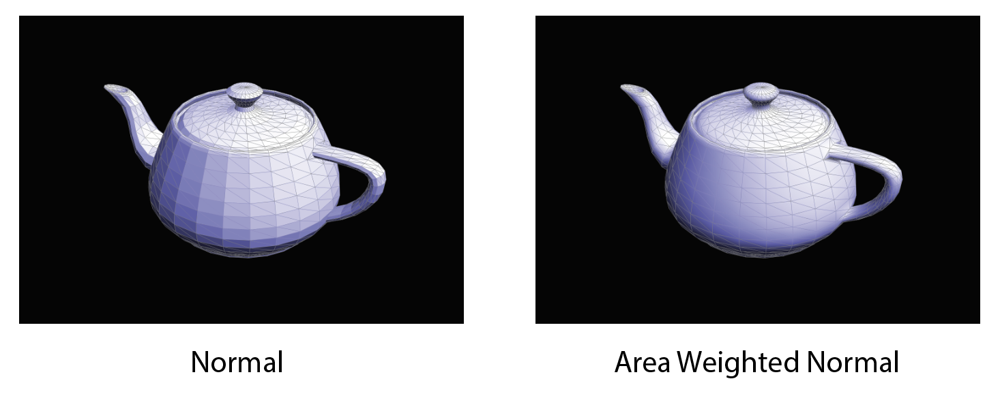
To implement the flip operation (ignoring boundary edges), we first label all geometric objects, including all halfedges, vertices, and faces. The steps are:
setNeighbors. For example, for the halfedge h_bc, its next should be h_dc, and it should now start at vertex a. We thus call
\[ \texttt{h_bc->setNeighbors(h_dc, h_cb, a, e0, f_left)} \]
b to h_bd, since h_bc now starts at a. Similarly, we set the halfedge stored by c to h_ca.
h_bc and h_cb, respectively.
To help with implementing this function, I followed the instructions, drew a mesh, labeled each geometric object, and wrote down the changes needed. I then implemented these changes in code.
Below is an image before and after performing the flip operation on several edges.
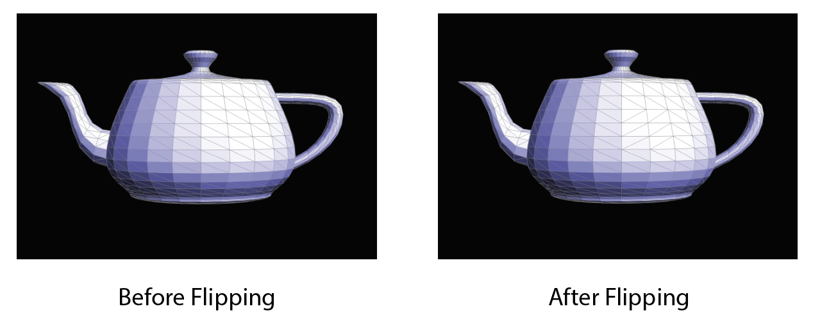
To implement the split operation, as in the previous part, we first label all geometric objects, including all halfedges, vertices, and faces. The steps are:
m at the midpoint of vertices b and c. We also create two new faces, three new edges, and six new halfedges. The original edge e0 is reused for the edge connecting b and m.
setNeighbors to form four triangles. For example, for the halfedge h_bc, its next should be h_ma, and it should still start at vertex b. We thus call
\[ \texttt{h_bc->setNeighbors(h_ma, h_cb, b, e0, f_left)} \]
e_mc, e_am, and e_dm to h_mc, h_am, and h_dm, respectively. We mark e_am and e_dm as new edges, while marking e0 and e_mc as segments of the original edge.
m to h_cb, which now starts at m and points to b. We also mark m as a new vertex.
f_left, f_right, f_left_new, and f_right_new to h_bc, h_cb, h_mc, and h_cm, respectively.
Similar to the previous part, I drawed a mesh and labeled all the geometric objects and then wrote down the changes needed. Then implemented these changes step by step. Below is an image before and after performing the split operation on several edges.
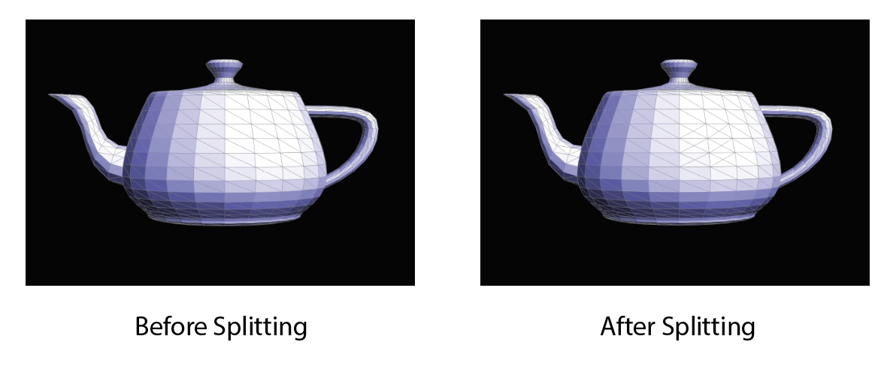
Below is another image before and after performing both split and flip operations.
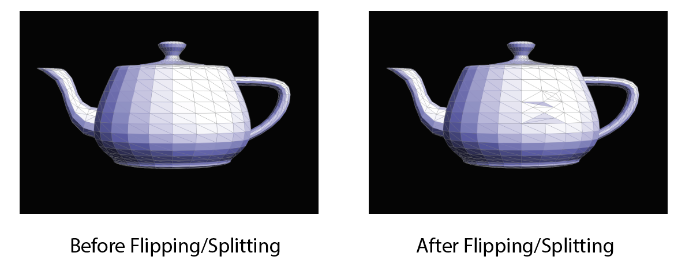
The interior implementation does not support splitting boundary edges. Unlike an interior edge, a boundary edge is adjacent to only one non-boundary triangle, so we split this triangle into two rather than four. The implementation is similar, with the following differences:
m, one new face, two new edges, and four new halfedges.c -> b to c -> m -> b.e_am as new.
Below is the result before and after implementing boundary edge splitting on beetle.dae. The boundary edges are now split correctly.
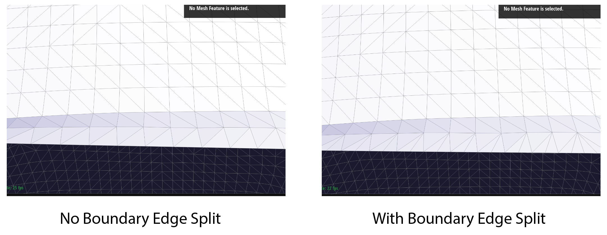
beetle.dae.To implement Loop subdivision, we follow these steps:
v->newPosition.
e->newPosition for use after splitting the edge.
m, we set m->newPosition to the position previously stored in e->newPosition. The splitEdge function marks the inserted vertex and new edges appropriately.
e->isNew is true and that the isNew flags of its two endpoints differ.
v->newPosition into v->position for every vertex to apply the positions computed earlier.
The images below show Loop subdivision applied to cube.dae. As we perform more subdivision iterations, sharp corners and edges become more rounded, and the surface becomes smoother. This is because every new position is a weighted average of the old vertex and its neighbors.
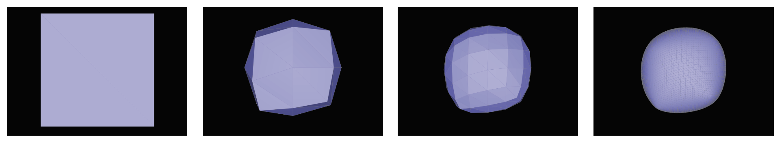
cube.dae.We can reduce this rounding by pre-splitting selected edges. Intuitively, pre-splitting adds vertices closer to the sharp corners, which can reduce how far these corners move during the averaging step. This can be seen by pre-splitting each of the 12 edges of the cube before applying Loop subdivision. With pre-splitting, we observe a more corner-like shape.
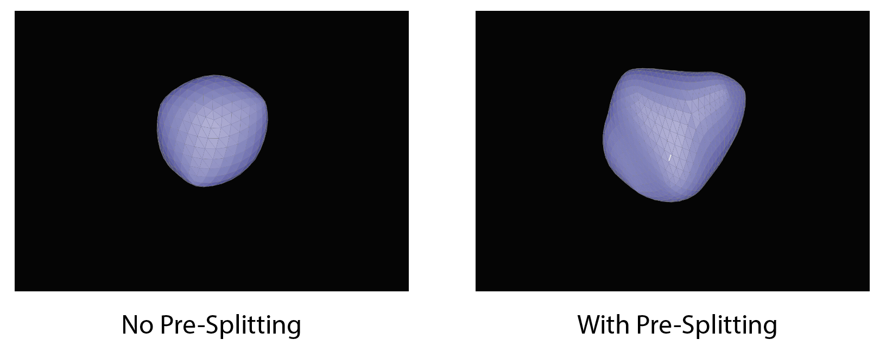
From the figure above, we also observe that after several iterations of Loop subdivision, the cube becomes slightly asymmetric. This is because its initial triangulation is asymmetric. Each square face contains only one diagonal, giving the corners different neighbor configurations.
To address this, we split the diagonal of each square face (adding a vertex at its center and dividing it into four triangles). This gives a symmetric triangulation. As seen below, this makes the resulting Loop subdivision symmetric.
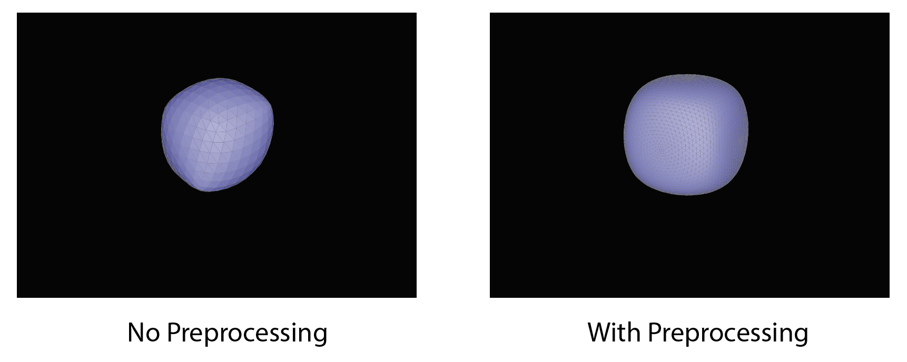
In the implementation above, we skip splitting boundary edges. This results in jagged boundaries after Loop subdivision (Figure a). However, even if we enable splitting for boundary edges, the boundaries remain jagged (Figure b).
Intuitively, this zigzag behavior arises from how vertex positions are updated. Recall that the new position of an existing vertex is defined as
\[ (1 - \deg(v)\, u)\, \texttt{v_pos} + u \sum_{v' \in N(v)} \texttt{v'_pos} \]For boundary vertices, this rule averages over both boundary and interior neighbors, which pulls the vertices inward. Meanwhile, newly inserted vertices are placed at the midpoints of the original boundary edges. This causes alternating inward and outward displacements along the boundary, producing a zigzag pattern as we see in Figure b.
To fix this, we update each boundary vertex using only its two neighbors along the boundary, ignoring interior vertices. The new position is given by
\[ \frac{3}{4}\, \texttt{v_pos} + \frac{1}{8}\left(\texttt{v_prev_pos} + \texttt{v_next_pos}\right), \]
where v_prev and v_next are the two neighboring vertices along the boundary. Similarly, for boundary edges, we replace the standard Loop subdivision weighting rule with the midpoint rule
After implementing these features, Loop subdivision works correctly on the boundary.
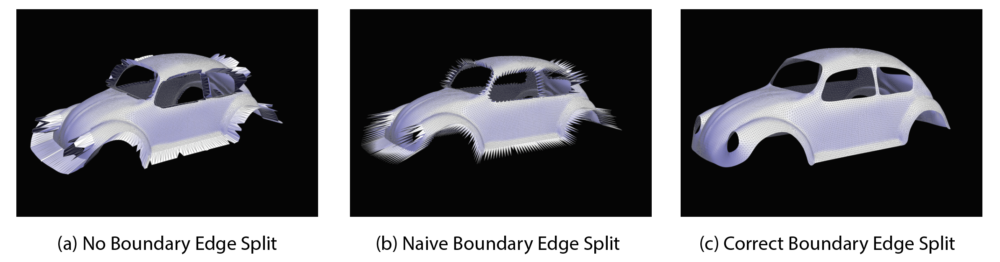
The Loop subdivision scheme described above updates each vertex position by taking a weighted average of the vertex and its neighbors. As discussed earlier, this can cause sharp corners to become rounded. Modified butterfly subdivision (Zorin, Schröder, and Sweldens, 1996), on the other hand, is an interpolating subdivision scheme that keeps existing vertices fixed and only inserts new vertices. This ensures that the subdivided surface passes through the original vertices, helping preserve the original shape.
On a high level, modified butterfly subdivision first computes the positions of new vertices using different rules depending on the local mesh structure:
After computing the new vertex positions, we split all original edges and flip the appropriate newly created edges, subdividing each original triangle into four smaller triangles. Unlike Loop subdivision, the positions of existing vertices remain unchanged.
In terms of the implementation, we define helper functions to compute vertex valences and the new vertex positions using above mentioned rules. After computing the new vertex positions, similar to loop subdivision, we first store the computed positions in newPosition before modifying the mesh. We then split all original edges, assign the precomputed positions to the inserted vertices, and flip newly created edges connecting an old vertex to a new vertex. Finally, we update the positions of the new vertices while keeping all original vertices fixed.
We consider running both loop subdivision and modified butterfly subdivision on the cube.dae mesh (here we splitted the diagonals to make the mesh symmetric). The results are shown below.
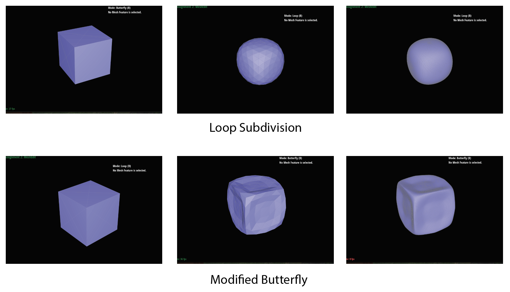
As we can see, modified butterfly subdivision preserves the original shape of the cube better than loop subdivision.